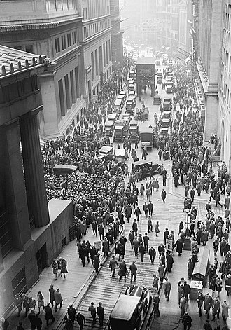
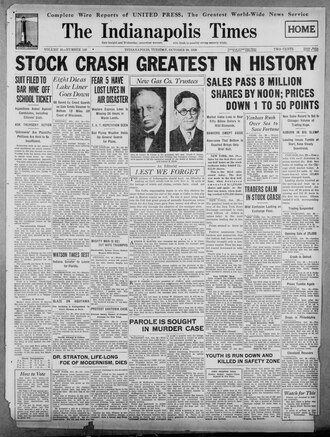

Part IV · Deals & War · Chapter 9
Inherits: Versailles (ch. 5) · Feeds: Spain (ch. 10)
The Great Depression
On Thursday 24 October 1929, thirteen million shares change hands on the floor at Wall Street; the following Tuesday, sixteen million. By the middle of November the quoted prices are roughly half what they were in September. Nothing has been shelled, nobody has crossed a border, and no government has fallen. Eight of the eleven classrooms in this book still hang the next ten years on that week — and in every one of the eight, the week itself happens on its own.

No classroom gives the crash a subject. So who gets the first verb after it?
1 The boring facts
Dry scaffolding. These lines are the ruler; the ladder is the measurement.
- Share prices on the New York Stock Exchange peak in early September 1929. Heavy selling on 24 October (“Black Thursday”) and 29 October (“Black Tuesday”) is followed by a decline that runs, with rallies, until July 1932.
- American output falls by roughly a third and unemployment reaches about a quarter of the labour force by 1933. Around nine thousand US banks suspend operations between 1930 and 1933.
- The Smoot–Hawley Tariff Act is signed on 17 June 1930. Other states retaliate. The value of world trade falls by roughly two-thirds between 1929 and 1932; the volume falls by roughly a quarter.
- Prices of primary commodities — wheat, cotton, coffee, rubber, sugar — fall further and faster than prices of manufactured goods, so producer countries outside Europe and North America are hit through the price of what they sell rather than through a stock exchange.
- Britain suspends the gold convertibility of the pound on 21 September 1931; the United States devalues in 1933; France holds on until 1936.
- Germany’s registered unemployed pass six million in early 1932. The NSDAP becomes the largest party in the Reichstag in July 1932. Hitler is appointed chancellor on 30 January 1933.
- Japan’s Kwantung Army seizes Mukden on the night of 18 September 1931. Franklin Roosevelt is inaugurated on 4 March 1933 and the legislative burst known as the Hundred Days follows.
- Economists still argue about the causes — monetary contraction, the gold standard, underconsumption, debt deflation — and about how much the New Deal did. The chronology above is not in dispute; the wiring is.
2 The ladder
Eight narrators who cover the crisis, ordered from thinnest agency (a crash that is weather) to thickest (a named group of men who decide to invade a country because of it). Ukraine’s volume begins in 1945 and Germany’s booklet in 1939; they are in the receipts. Kazakhstan’s book is national history and is never a world-event column here. Read the middle column for the sentence that comes after the fall.
| Classroom | Who acts | One-line tag |
|---|---|---|
| IN · NCERT 2022+ |
“US Wall Street Stock Exchange crashes (1929); Great Depression follows; by 1932, 12 million are out of work” |
Crashes, follows, sweeps |
| BY · Кошелев 2021 |
«Период экономической стабилизации в Европе и США закончился 24 октября 1929 г. В этот день произошел крах на Нью-Йоркской бирже — обвальное падение курса ценных бумаг.» “The period of economic stabilisation in Europe and the USA ended on 24 October 1929. On that day a crash occurred on the New York exchange — a landslide fall in the rate of securities.” |
A crash occurred; democracies stepped |
| RU · Чубарьян 2023 |
«В октябре 1929 г. произошло неожиданное обвальное падение стоимости акций на Нью-Йоркской фондовой бирже. Началась всеобщая паника.» “In October 1929 an unexpected, landslide fall in the value of shares occurred on the New York stock exchange. A general panic began.” |
A fall occurred; a president did nothing |
| UK · Lowe 2013 |
“In September 1929 the buying of shares on the New York stock exchange in Wall Street began to slow down. Rumours spread that the boom might be over, and so people rushed to sell their shares before prices fell too far.” |
People rushed; a party must share the blame |
| US · OpenStax 2022 |
“When the economic collapse that came to be known as the Great Depression began in the United States in 1929, it ended the postwar boom and sent the entire world’s economy reeling. No economic depression is caused by one element alone.” |
No single cause — and one named statute |
| IT · Sabbatucci–Vidotto 2004 |
«Gli effetti planetari della crisi furono aggravati dal fatto che gli Usa, anziché assumersi le responsabilità connesse al ruolo di potenza egemone sul piano economico (e farsi dunque carico della stabilità del sistema internazionale), cercarono innanzitutto di difendere la loro produzione inasprendo il protezionismo…» “The planetary effects of the crisis were aggravated by the fact that the USA, rather than taking on the responsibilities attached to the role of hegemonic power in economic terms (and so shouldering the stability of the international system), sought above all to defend their own production by hardening protectionism…” |
A great power declined the job |
| SD · MoE 2009 |
«وقد تأثر السودان بالفعل بالأزمة الاقتصادية العالمية بين (1929 – 1933م) عندما هبط الطلب على القطن وانخفض سعره. ولجأت الحكومة إلى إجراءات اقتصادية صارمة فخفضت العمالة والمرتبات.» “Sudan was indeed affected by the global economic crisis between (1929–1933 CE) when demand for cotton fell and its price dropped. The government resorted to strict economic measures, so it reduced employment and salaries.” |
The government cut one payroll and not the other |
| CN · 纲要 上 2019 |
1929 年秋，世界性经济危机爆发，严重影响日本。日本统治集团为缓和国内矛盾，摆脱困境，急于发动侵略中国的战争。 “In the autumn of 1929 a worldwide economic crisis broke out, gravely affecting Japan. The Japanese ruling clique, in order to ease internal contradictions and escape its predicament, was impatient to launch a war of aggression against China.” 中外历史纲要 上 · 第22课「局部抗战」· p. 150 |
A clique, a motive, a war |
3 The tell
Start with what nobody disputes. Prices fell in New York in October 1929; factories closed; millions lost work; the world economy contracted for years. Every one of the eight agrees, and every one of the eight writes the fall itself without a human subject. A fall occurred. A crash occurred. The exchange crashes. A crisis broke out. Buying began to slow down. In the whole ladder there is not one sentence of the form “X crashed the market.” That is unusual. In the ladders of chapters 1, 4 and 8 the argument was always about which name went in the subject slot. Here the slot is empty in every column, and it is empty for the same reason: there is no plausible name to put in it.
So the interesting sentence is the next one. Once the market has fallen by itself, somebody in each classroom has to be allowed to move — and the choice of who is where the eight books stop resembling each other.
NCERT allows nobody. India’s entire treatment of the Great Depression is a timeline cell and one subordinate clause. The cell is a chain of intransitive verbs: the exchange crashes, the Depression follows, twelve million are out of work. The clause is stranger, because of where it sits. It appears in a chapter on the dispossession of Native Americans, as a time-marker for the 1928 Meriam survey — the USA “was swept by a major economic depression that affected all its people.” The survey being dated had documented that some of those people were already destitute in the boom. Two paragraphs later the same page gives the 1934 Indian Reorganisation Act, which was part of the New Deal, without the phrase “New Deal.” Search the whole book: Roosevelt, nil; Hoover, nil; New Deal, nil.
Belarus allows an abstraction. Koshelev’s account is the most complete on the ladder that contains no human being at all — a crash, a table of percentages, bread queues, “business tycoons” who lost fortunes, and then the recovery, whose subject is “the Western democracies,” which “stepped onto the path of state regulation.” The book never prints the words «новый курс» — New Deal — anywhere, and never prints «Уолл-стрит». Roosevelt is in the book: he announces the good-neighbour policy to Latin America, he sits at Yalta, and, eight thousand lines later, he is quoted as an authority in a passage about the strong state in modern Russia. He is not permitted to end the Depression. What ends it is a path that democracies stepped onto.
Russia allows a president, but only to fail. Chubaryan’s crash is a fall that “occurred”; his crisis is “structural and systemic,” “a break, a turning point in the development of capitalism.” Then Hoover arrives — convinced prosperity is “somewhere around the corner” — and бездействовал: he did nothing, a verb of pure omission, the only thing the sentence lets him do. Roosevelt gets the active verbs a page later, and Keynes gets the diagnosis. Note what this ordering does. Blaming capitalism as a system and blaming an individual president are usually rival explanations; here they run in series, the system produces the crisis and a man fails to answer it, and the reader is not asked to choose.
Lowe allows a political party, and says so in a heading. Section 22.6 (d) is titled “Who was to blame for the disaster?” — the question this chapter asks, printed in an English textbook in 2013 — and the answer refuses the easy target: blaming “the unfortunate President Hoover” is “unfair,” and “the Republican Party as a whole must share the blame.” Lowe is also the only narrator who takes the crash off the causal chain altogether: it “did not cause the depression; it was just a symptom.” Having demoted the famous event, he can then name what he thinks did the work — overproduction, unequal income, tariffs, speculation — and he is the only one who prints the income figures underneath the claim: between 1923 and 1929 industrial wages rose 8 per cent while profits rose 72 per cent.
OpenStax allows a law. The American book opens by refusing single agency — “No economic depression is caused by one element alone” — and then does something a self-pole narrator does not have to do: it hands the transmission mechanism to its own government by name. The Smoot-Hawley Tariff Act “was the highest tariff the U.S. government has ever enacted. It helped stifle world trade, which decreased 30 percent by the early 1930s.” In the whole volume, Herbert Hoover is not mentioned once. The American textbook has removed the American president from the American Depression and left the American tariff in. That is not softening. It is a swap of a person for a policy, and the policy is the one with the foreign victims. Where those victims were, the page does not say: the recalled American loans, it notes, “caused crises in other places.”
Sabbatucci–Vidotto allow a great power to decline a job. Italy’s manual gives the fullest technical account on the ladder — thirteen million securities on black Thursday, sixteen million on the 29th, eleven suicides among speculators and brokers in New York that day — and then writes the sentence no Anglophone column writes: the planetary effects were made worse because the USA, “rather than taking on the responsibilities attached to the role of hegemonic power,” chose to defend its own production. Hoover appears exactly once in the entire manual, as the incumbent who lost. The agent is not a man or a party; it is a state that had a duty and preferred a tariff.
“Why did it not affect the economy of the Soviet state?”
BY · Всемирная история, 11 кл. (БГУ 2021), p. 124 — end-of-section exercise 3. The book does not answer it.The last two rungs are the ones that change the shape of the chapter, and they are the two narrators furthest from any stock exchange.
Sudan’s ministry textbook never uses the words “Great Depression,” “Wall Street” or “Roosevelt.” It has no crash at all. The crisis enters as a price: the Gezira scheme had made cotton about 40 per cent of government income and two-thirds of exports, demand fell, the price fell, “and the government resorted to strict economic measures, so it reduced employment and salaries.” A government is the subject, and what it does is subtract. Sixteen pages on, the same event is told again from the other end — the 1931 Gordon College strike, led by Makki al-Manna, against a cut in Sudanese graduates’ salaries from eight pounds to five and a half — and the book adds the clause that no other column on this ladder has any use for: but the government did not reduce the salaries of the British and the foreigners. Seven books measure the Depression in unemployed millions. This one measures it as the gap between two payrolls in the same office.
China gives the crisis its only fully transitive sentence in the corpus. In 中外历史纲要 the world crisis is not a topic; it is a subordinate clause, four characters of scale — 严重影响日本, gravely affecting Japan — and then the main clause arrives with a subject that wants something: the Japanese ruling clique, “in order to ease internal contradictions and escape its predicament, was impatient to launch a war of aggression against China.” Three sentences later the Kwantung Army is blowing up a railway near Liutiaohu. There is no unemployment figure, no bank, no tariff, no Roosevelt — the only 罗斯福 in the book is a wartime fireside chat quoted in 1945 about Chinese resistance. The Depression is not an economy in this classroom. It is a motive.
Line the eight up and the pattern is not about ideology. Belarus and Russia are the two books most willing to call the crisis a crisis of capitalism as a system — «кризис определённого этапа развития капиталистической системы» — and they are also the two least willing to let anyone act. The United States and the United Kingdom, whose economies are the subject matter, produce the most detailed apportionment of blame, and aim it at institutions in their own countries: a party, a tariff. What rises steadily down the ladder is not candour about capitalism. It is proximity to the victim. The further a narrator’s own population is from Wall Street, the more concrete the actor becomes — until, in Khartoum and in Beijing, the Depression stops being an economic event and becomes something a named authority did to somebody.
One footnote on who gets counted. In the top half of the ladder, the Depression’s victims are aggregates: thirteen million, fourteen million, twelve million, 80 per cent of families with no savings, one in eight farmers. In the bottom half they are identified: Sudanese graduates as against British and foreign staff; the Chinese Northeast. Both halves are true. Only one half can be argued with, because only one half names who was standing where.
4 The thread
The best-known photograph in this chapter sits in the American textbook a few lines above the tariff paragraph: men in overcoats and hats queued along a Chicago pavement in 1931 outside a soup kitchen, waiting for free food. The caption names who paid for the kitchen — Al Capone. In the same years, on another continent, a government was buying food in order to burn it. Both things are in this chapter’s story. Only one of them is in the books.
Three narrators put the commodity on the page and none of them follows it. Russia lists what the world already could not sell before the crash — «Мировой рынок сельскохозяйственных продуктов: пшеницы, сахара, кофе, каучука, шерсти, жиров — был переполнен уже в 1928 г.», “the world market in agricultural products — wheat, sugar, coffee, rubber, wool, fats — was already overstocked in 1928” (p. 77). Italy prints the measurement that sorts the victims: between 1929 and 1932 world output of manufactures fell 30 per cent and of raw materials 26, and prices fell sharply in industry and, «soprattutto», in agriculture, “where the drop was more than 50 per cent” (p. 372); in its Latin America chapter it says the crisis struck a whole continent by “making the prices of raw materials and foodstuffs collapse” (p. 460). Belarus gets one sentence further than anyone. It names what Brazil sold — «фрукты, кофе и сахар», “fruit, coffee and sugar” — and then, of the crash in demand that followed: «В Бразилии и на Кубе произошли революции», “in Brazil and in Cuba revolutions occurred” (p. 139). Not one of the eight says what was done with the coffee.
Here is what was done with it. Coffee was roughly seven-tenths of Brazil’s export earnings in 1929, and for thirty years the state had held the world price up by warehousing its own surplus and borrowing abroad against it. Then American demand collapsed and New York banks began calling in foreign loans — the American textbook records the calling-in, and says only that it “caused crises in other places.” Brazil could now neither sell the crop nor borrow against it, so it bought the crop and destroyed it: roughly 78 million sixty-kilo bags between 1931 and 1944, burned in the open, dumped at sea, and shovelled into locomotive fireboxes as fuel, while men queued for free food in Chicago. In October 1930 the coffee oligarchy’s hold on the presidency broke and Getúlio Vargas took power on 3 November; in 1933 the Departamento Nacional do Café was set up to run the destruction as policy. That is the revolution Belarus mentions. And the burning did not fail because markets are wicked. It was price-support arithmetic — buy the surplus, hold the price — and it had worked for a generation against ordinary harvest swings. What it could not beat was a collapse in world demand, because the money to buy the surplus with has to come from selling something.
That is where the crash landed. How it travelled is the other half, and here the ladder is unusually generous. OpenStax hands the mechanism to its own government by name — Smoot-Hawley, “the highest tariff the U.S. government has ever enacted,” which “helped stifle world trade” — and notes that “an increased tariff of nearly 40 percent had already been enacted in 1922.” Lowe names that earlier one, the Fordney–McCumber tariff, and works the return leg: it “helped to keep foreign goods out,” but it also stopped European states “making much-needed profits from trade with the USA,” without which they could not buy American goods or pay American war debts, “and many states retaliated” (p. 490). Italy makes it a decision rather than a statute: the United States, “rather than taking on the responsibilities attached to the role of hegemonic power,” hardened protectionism. Russia records the outcome with nobody in the subject slot at all — barriers “in the form of customs duties” were raised across the path of goods (p. 106). Hoover signed the Act on 17 June 1930 over a public petition from 1,028 economists asking him to veto it. The retaliation came, and the value of world trade fell by roughly two-thirds in three years.
Say the causation exactly, because the punchy version is wrong. The tariff did not cause the Depression: the crash was eight months old when the Act was signed, and the contraction was already running. What the tariff did was propagate and deepen it — it shut the channel through which other countries earned the dollars they bought American goods with, and it made the same move rational for every government that traded. The depression exported itself through the customs house rather than the stock exchange, which is why it reached a cotton budget in Khartoum and a coffee warehouse in Santos, neither of which owned a share. The men who designed the postwar economy in 1944–47 treated that spiral as the thing to be engineered against, and wrote the General Agreement on Tariffs and Trade — Geneva, 30 October 1947, twenty-three countries — whose entire purpose was to stop 1930 happening again; it became the World Trade Organization in 1995, and chapter 14 is where that order gets built. Three of the eleven teach GATT in a later unit — Lowe in his United Nations chapter (§ 9.5), OpenStax at § 15.1, Sabbatucci–Vidotto at § 22.2 — and not one of the three names the tariff it was written against. OpenStax comes within a word: GATT “was designed to prevent the reemergence of prewar-style trade barriers.” Whose barriers, it does not say, on a page 135 pages after the one where it named them.
The object is coffee. It is on the table in all eleven countries in this book, and the price its grower is paid is still set on a futures exchange rather than by the grower — the same arrangement that let a government in 1931 decide the crop was worth more as locomotive fuel than as coffee. On the landing side, 3 of 11 classrooms name a farm commodity inside the crisis (RU’s overstock list, SD’s cotton, BY’s “agricultural and raw-material” demand); 1 of 11 prints the figures showing farm prices fell furthest (IT); 1 of 11 says a revolution followed (BY); 0 of 11 say what was done with the crop. On the travelling side, 2 of 11 name Smoot–Hawley (US, UK) and the same two date the first move to 1922, one by name and one by year only; 1 of 11 calls it a great power declining a job (IT); 1 of 11 reports the barriers with no one raising them (RU); 0 of 11 join the tariff to the treaty written against it. And the word itself — “tariff,” a dead technical term for two generations, back in every newsfeed in all eleven countries — is the argument those twenty-three signatures were meant to settle, being had again.
One more pair of sentences closes the books, and the two thickest Western columns print them almost identically. Lowe, at the end of his New Deal section: “It was the war that finally put an end to the depression.” OpenStax: “only the economic stimulation of the onset of World War II brought the world closer to a return of prosperity.” Say that exactly too: the New Deal reduced the pain and rewrote the social contract, and by its own textbooks’ next sentence it did not close the output gap — full employment under arms did. That is not a verdict on the Deal, and it is not a brief for war; it is the receipt behind every later claim that military spending “creates jobs,” a grammar the reader has heard in arguments this year. The recovery walks out of this chapter wearing a uniform — which is why the next two chapters are Spain and Munich.

5 Credit where due
Fairness, paid in installments
Lowe (UK) earns the credit line, for printing the question this chapter is built on as a subheading and then answering it against the grain. “Who was to blame for the disaster?” could have been a paragraph blaming a foreigner or a market. Instead it clears Hoover personally, indicts a governing party, demotes the most famous event in the story to a symptom, and supports the whole thing with the one comparison that makes the argument checkable — wages up 8 per cent, profits up 72 per cent, 1923 to 1929. It is a school textbook telling a fifteen-year-old that the memorable thing was not the important thing.
OpenStax (US) takes the self-incrimination line. A national survey describing a catastrophe that began in its own country could have run the tariff past the reader as background. It names the Act, says it was the highest ever enacted, and attaches a world figure to it: trade down 30 per cent. It also does the thing this book keeps asking of narrators — it says the crisis was worst where the reader is not looking, and gives the global GDP number rather than only the domestic one.
MoE Sudan (SD) is the angle lead, and the shortest text on the ladder. Two paragraphs and a strike give this chapter the only sentence in the corpus that separates the people a government protected from the people it did not. No other column tells the Depression as a decision about whose pay to cut.
Sabbatucci–Vidotto (IT) is the depth lead, again, and deserves it for scale reporting: it is the only book here that gives the world numbers and the American numbers side by side — world trade down more than 60 per cent, manufactures down 30, raw materials down 26, farm prices down more than 50 — so that a reader can see which line fell hardest. That is the measurement the rest of the ladder is missing.
6 Where this stops being true
Limits
This ladder is eight pinned editions whose syllabus reaches 1929, not eight countries and not “the world.” Ukraine’s volume covers 1945–2018 and Germany’s booklet is a National Socialism primer; their zeros are syllabus boundaries, not avoidance. On this book’s own rule the topic is high-salience — every in-scope narrator mentions the crisis — so there is no avoidance signal anywhere in this chapter, in either direction.
Kazakhstan is not a column here and would not be even if the genre allowed it: its book is national history. It is worth one line anyway, because its 1929 is not a stock exchange. The Kazakh volume’s account of that year is forced collectivisation and armed revolt — “in 1929 alone more than 30 risings took place in Kazakhstan” — followed by the famine of the early 1930s. Same calendar year, a different world event, and no relation to the one on the ladder except the date.
The Sudanese lines are the weakest evidence in the chapter and are marked as such. That PDF’s Arabic extraction is ligature-mangled — letters decompose and reorder, so the strings cannot be searched or copied. Both Arabic quotations have been reconstructed to standard orthography and must be read against the printed page before this chapter ships. Printed pages are PDF pages minus eight.
Kept verbatim because errors are data. The Belarusian section states that the deepest fall in production, “more than 50%,” was in the USA and Germany — and the table printed on the facing page gives industrial production as −6% for the USA and −41% for Germany. The text and its own table do not agree about the country the section is mostly about. The extraction shows “– 6%” without the space that every other cell in the table has, which is consistent with a lost digit; whether the printed page says −6, −46 or something else is a question for the printed page, not for a machine.
A second verbatim keep, milder. The Russian volume’s prose says the world economic crisis “entered history under the name of the ‘Great Depression’” — one event, two names. Its chronology on p. 219 lists them as two entries with two date ranges: «1929—1933 — мировой экономический кризис» and «1929—1938 — Великая депрессия в США». A student revising from the timeline learns that the world crisis lasted four years and an American depression lasted nine.
Finally, none of these books is an economic history. Not one of the eight explains the gold standard, and the mechanism most economists now put near the centre of the story — monetary contraction and the constraint of gold convertibility — appears in this whole corpus as a single line about the pound in 1931. If you want to know why the Depression was as deep as it was, every column here will leave you unsatisfied.
7 Receipts
- UK — Norman Lowe, Mastering Modern World History, 5th ed. (Palgrave Macmillan 2013): § 22.6 “The Great Depression arrives, October 1929,” pp. 489–493 — Black Tuesday and the $30 billion, p. 489; “Who was to blame for the disaster?”, p. 492; “Hoovervilles,” p. 492; § 22.7 Roosevelt and the New Deal, pp. 493–498; “It was the war that finally put an end to the depression,” p. 498. The book’s own index: “Wall Street Crash 55, 314, 489–91.”
- US — OpenStax, World History, Volume 2: from 1400 (2022): § 12.3 “The Great Depression,” pp. 491–497 — no single cause and the 80-per-cent savings figure, pp. 491–492; Smoot-Hawley and world trade −30%, p. 492; world GDP −15%, p. 492; New Deal and the FDIC, p. 494. 0 mentions Hoover — anywhere in the volume.
- IT — G. Sabbatucci & V. Vidotto, Il mondo contemporaneo (Laterza 2004): ch. 17 “La grande crisi,” p. 366; § 17.3 “Il ‘grande crollo’ del 1929,” pp. 371–372; § 17.5 Roosevelt and the New Deal, pp. 374–375; Latin America and the collapse of raw-material prices, p. 460; coffee monoculture in Brazil, p. 241. 1 mention Hoover — p. 374, as the incumbent who lost.
- RU — А. О. Чубарьян, Всеобщая история. Новейшая история 1914–1945 гг., 10 кл. (Просвещение 2023): § 9 “Мировой экономический кризис 1929—1933 гг. Великая депрессия. Пути выхода,” pp. 76–82 — the October fall, p. 76; “Американское «просперити» рухнуло,” p. 77; the disbalance in production–distribution–consumption, p. 77; the crisis wave carrying Germany, Spain and Japan, p. 81; Keynes, p. 78; § 10 “США: «новый курс» Ф. Д. Рузвельта,” pp. 83–89 — Hoover inactive and the “new deal for the forgotten man,” p. 84; chronology, p. 219.
- BY — В. С. Кошелев и др., Всемирная история, 11 кл. (БГУ 2021): “Великая депрессия,” pp. 123–124 — the 24 October crash, p. 123; about 13 million US unemployed and the indicators table, p. 124; “western democracies… state regulation,” p. 124; the Soviet-exception exercise, p. 124; the crisis worsening Germany, p. 129; the crisis collapsing demand for Latin American farm and raw-material exports, with “revolutions in Brazil and Cuba,” p. 139; Roosevelt and the good-neighbour policy, p. 140. 0 mentions «новый курс» (New Deal) · «Уолл-стрит» — anywhere in the volume.
- SD — وزارة التربية والتعليم, التاريخ للصف الثالث (Khartoum 2009): Gezira scheme and the 1929–1933 crisis, p. 80; the Gordon College strike under Makki al-Manna, p. 97; “the government did not reduce the salaries of the British and foreigners,” p. 99; the crisis and the workers’ movement, p. 109. Printed pages = PDF pages − 8. 0 mentions “Great Depression” · Wall Street · Roosevelt (as a Depression figure) · New Deal — stems searched: الكساد, وول ستريت, روزفلت, 1929.
- IN — NCERT, Themes in World History, Class XI (post-2022 rationalized): Americas timeline, p. 134; “Displacing Indigenous Peoples,” p. 147; Indian Reorganisation Act 1934, p. 147. 0 mentions Roosevelt · Hoover · New Deal — anywhere in the volume; the word “depression” occurs twice.
- CN — 中外历史纲要 上 (2019), 第22课「局部抗战」, p. 150 — the sole narrative use of the world crisis, as the run-up to the September 18 Incident. 0 mentions 大萧条 · 华尔街 · New Deal 罗斯福新政. 罗斯福 appears once in the volume, in a wartime 《炉边谈话》 extract on Chinese resistance, p. 161.
- 1 mention UA — Гісем/Мартинюк, Всесвітня історія, 11 кл. (2019), p. 45: the 2010 US financial reform «стала наймасштабнішою із часів Великої депресії» — “became the largest since the times of the Great Depression.” The syllabus starts in 1945; the Depression exists in this book only as a measuring stick for 2010. Stems searched: Велика депрес-, економічн- криз-, 1929, бірж-, Волл, Рузвельт.
- 0 in-scope DE (bpb Nr. 316, NS 1939–1945 booklet — stems searched: Weltwirtschaftskrise, Börsenkrach, 1929, New Deal, Arbeitslos-; no crisis-event hits) · KZ (national history — not a world-history column; its 1929 is collectivisation and revolt, PDF p. 146)
Now look up what your textbook calls it.